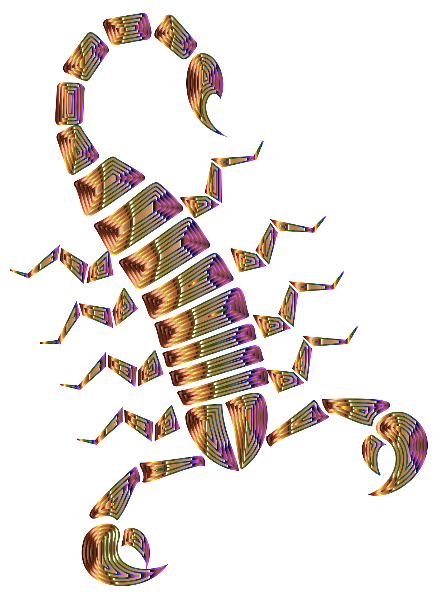
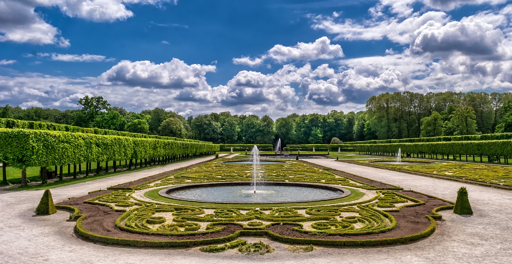

Enclaves Singulares
Descubre los mejores lugares para disfrutar de tu tiempo de ocio

Puente sobre jardín
Un señorial puente cruzando un arrollo
Fauna singular
Podemos encontrar numerosas especies en nuestro trayecto

Jardines espectaculares
Los jardines del siglo xVIII son un recuerdo de Versalles